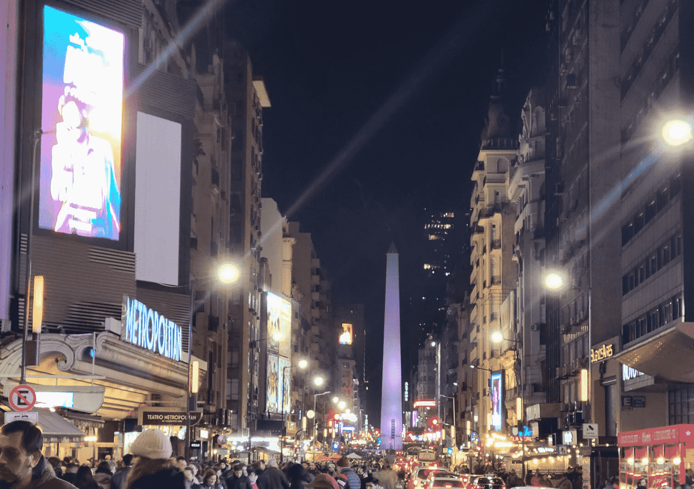

BUENOS AIRES
The Night City, Buenos Aires, is a place of wonder and history but can’t truly be appreciated until the sun sets. Argentine people eat dinner at 10 pm, so the restaurants open no earlier than 8. Argentinians love their meat, look for restaurants grilling food on the traditional charcoal barbeque. Meals end with coffee or alcohol late into the night when couples dance to the rhythm of the tango. Seemingly trapped in the past, the grand colonial architecture has changed little since it was built by the Europeans. Greeted by warm smells and generous people, walking along the Plalla de Mayo really lets you soak up the energy of the city and experience the passion in the air. The must-see places are the Pink House Argentine’s equivalent to the White House, and marvel at the lavish tombs in the Recoleta Cemetary. No visit to Buenos Aires is complete without getting tickets to see a Tango Show, except for an evening of music, singing and dancing. Day and night street markets sell artwork and handicrafts, be sure to sample the local chocolate delicacies at the food stalls. I recommend you check out the link below for a Tango show and dinner, you can buy tickets through this link.
https://www.tangol.com/eng/argentina/buenos-aires/shows/tango-show-with-dinner/d_20_st_19/index.htmlLONDON

The iconic city of London covers …square miles, it can be easily navigated by public transport, the red double-decker buses and Black Cab taxis. Or try your hand navigating the Tube trains of the London Underground. Walk along the Thames River and take in the historical sights, Tower Bridge, and the Houses of Parliament with Big Ben. Opposite is the great Tower of London, where you can see the Crown Jewels. Docked close by you can tour the famous battleship HMS Belfast from WWII. You might want to catch a view of the city from the London Eye, the world's largest Ferris wheel. Further along the river towards Greenwich, is another famous ship, The Cutty Sark, a fully restored tea cutter sailing ship from the days of the East India Trading Company. Turning from the river you can walk through the quaint streets of Greenwich and head uphill through parks to Greenwich Observatory and stand for photos on the meridian of Zero Degrees Longitude. I enjoyed my trip on the London Eye, you can check it out in the link below.
https://www.getyourguide.com/the-london-eye-l2711//index.htmlROME

The Immortal City. Rome was built over 2 millennia ago, you can feel the history as you walk the cobbled streets. Much of the city’s ancient buildings still survive from Roman times. Climb aboard the open-top tour buses that circulate past the sights, while you can listen to the guided tour on headphones, and imagine how the city once was. You can hop off the tour bus to get a closer look at each of the sights, the most popular being the Colosseum and the Vatican. Early risers may like to get in line to attend Mass the Pope presides over each Sunday morning. Rome is also a modern vibrant city, famous for its designer stores and excellent cuisine. Start your morning with a coffee at one of the many cafes. And at the end of the evening be sure to save room for ice cream Italian Gelato. I highly recommend you check out the big bus tours, they are guided tours around the streets of Roam, and you can get on and off wherever you want and explore!
https://www.getyourguide.com/rome-l33/rome-big-bus-hop-on-hop-off-open-top-sightseeing-tour-t66064/?ranking_uuid=223afa80-2101-478f-a6fb-aa3efe3d45b9/index.html